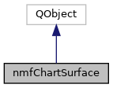

This class allows the user to display a 3d surface using the passed arguments for customization. More...
#include <nmfChartSurface.h>
Inheritance diagram for nmfChartSurface:

Collaboration diagram for nmfChartSurface:

Public Member Functions | |
| nmfChartSurface (Q3DSurface *graph3D, const QString &xTitle, const QString &yTitle, const QString &zTitle, const QString &xLabelFormat, const QString &zLabelFormat, const bool &reverseXAxis, const bool &reverseZAxis, const boost::numeric::ublas::matrix< double > &rowValues, const boost::numeric::ublas::matrix< double > &columnValues, const boost::numeric::ublas::matrix< double > &heightValues, const bool &showShadow, const bool &manuallySetScale, const double &manualYMin, const double &manualYMax) | |
| nmfChartSurface constructor that describes a 3d surface plot More... | |
| void | selectCenterPoint () |
| Selects the center point on the 3d surface with Qt's blue marker ball. | |
| void | selectMinimumPoint () |
| Selects the minimum point on the 3d surface with Qt's blue marker ball. | |
Detailed Description
This class allows the user to display a 3d surface using the passed arguments for customization.
Constructor & Destructor Documentation
◆ nmfChartSurface()
| nmfChartSurface::nmfChartSurface | ( | Q3DSurface * | graph3D, |
| const QString & | xTitle, | ||
| const QString & | yTitle, | ||
| const QString & | zTitle, | ||
| const QString & | xLabelFormat, | ||
| const QString & | zLabelFormat, | ||
| const bool & | reverseXAxis, | ||
| const bool & | reverseZAxis, | ||
| const boost::numeric::ublas::matrix< double > & | rowValues, | ||
| const boost::numeric::ublas::matrix< double > & | columnValues, | ||
| const boost::numeric::ublas::matrix< double > & | heightValues, | ||
| const bool & | showShadow, | ||
| const bool & | manuallySetScale, | ||
| const double & | manualYMin, | ||
| const double & | manualYMax | ||
| ) |
nmfChartSurface constructor that describes a 3d surface plot
- Parameters
-
graph3D : the Qt 3D surface widget xTitle : title for x-axis yTitle : title for y-axis (the vertical axis) zTitle : title for z_axis xLabelFormat : format for the labels along the x-axis zLabelFormat : format for the labels along the z-axis reverseXAxis : boolean signifying if the user wants the x-axis reversed reverseZAxis : boolean signifying if the user wants the z-axis reversed rowValues : matrix containing the x values of the plot columnValues : matrix containing the z values of the plot heightValues : matrix containing the height values of plot (i.e. the y values) showShadow : boolean signifying if the user wants to see the surface plot's shadow manualSetScale : boolean signifying if the user wants to manually set the vertical scale manualYMin : minimum y axis value on surface manualYMax : maximum y axis value on surface
The documentation for this class was generated from the following files:
- nmfCharts/nmfChartSurface.h
- nmfCharts/nmfChartSurface.cpp